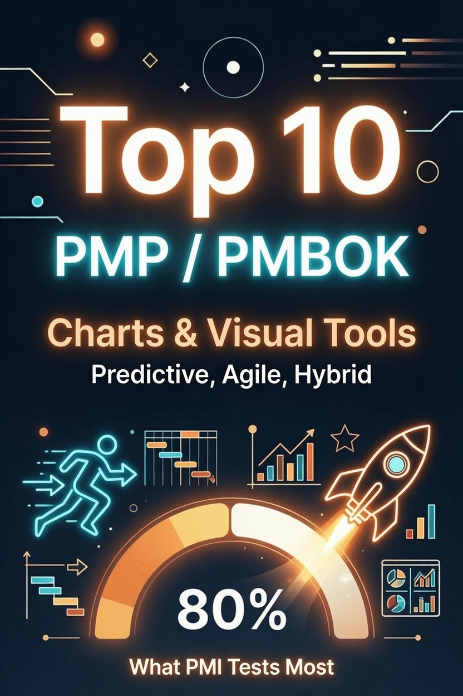

Free Visual Tools & Charts Flashcards + 10 Question PMP Practice Test

The PMP exam tests chart recognition hard. Questions describe a chart's function without naming it — you match the description to the right tool. A scatter plot with upper and lower limits? That is a control chart. A bar chart where the scope line rises when stakeholders add work? Burnup.
These 10 flashcards cover every chart type the PMBOK 8th Edition treats as a distinct tool. Each card gives you the definition (verbatim from the PMBOK 8 glossary and tools sections), what the chart tracks, and the exam tell that gives the answer away. Below the cards you will find a 10-question interactive test. Take it cold, review what you missed, then retake until you hit 100%.
10 Chart Flashcards
Hover each card to flip it and reveal the full definition.
Burndown Chart
Sprint Tracking — Work remaining vs. time left
"A burndown chart is a graphical representation of the work remaining versus the time left in a timebox." — PMBOK 8 Glossary. A diagonal ideal line runs from total effort to zero. The actual line tracks daily remaining work. The gap between them shows whether you will finish on time.
Exam tell: "Work remaining" + "ideal trend line" = burndown. Sprint scope is fixed, so scope changes should not happen.
Burnup Chart
Release Tracking — Work completed toward a milestone
"A burnup chart is a graphical representation of the work completed toward a milestone. Burnup charts are used mostly within adaptive development approaches to show project progress over time." — PMBOK 8 Glossary. The scope line (total work) sits at the top. The completed line rises from zero toward it.
Exam tell: "Total scope line" + "completed work line" = burnup. Pick this for scope changes or release-level tracking.
A horizontal bar chart where each bar represents a schedule activity. Bar length shows duration. Bar position shows start and finish dates. Arrows or link lines show dependencies. PMBOK 8 identifies Gantt charts as a schedule management tool for visualizing the project timeline and tracking actual vs. planned progress.
Exam tell: "Horizontal bars" + "start and finish dates" = Gantt. Not ideal for showing task dependencies — that is a network diagram's job.
Control Chart
Quality Control — Process stability over time
A control chart plots sample data points in time order. It includes a centerline (the mean), an upper control limit (UCL), and a lower control limit (LCL). Points outside the limits signal an out-of-control process. Runs of seven consecutive points on one side of the mean signal a non-random pattern.
Exam tell: "UCL" + "LCL" + "out of control" = control chart. Seven consecutive points on one side = non-random cause.
Cumulative Flow Diagram
Flow / Kanban — WIP, cycle time, throughput
A CFD shows the statuses of work items over time as stacked colored bands. The top band represents total work (backlog + in progress + done). The vertical width of each band at any point shows how many items are in that status. Narrowing bands mean flow is improving. Widening bands signal bottlenecks.
Exam tell: "Colored bands" + "work in progress" or "cycle time" = CFD. Vertical distance between bands at a point equals WIP.
RACI Matrix
Resource Management — Role assignments
"A RACI matrix is a responsibility assignment matrix that uses the categories Responsible, Accountable, Consult, and Inform." — PMBOK 8 Glossary (paraphrased). A grid with tasks or deliverables as rows and team members as columns. Each cell contains R, A, C, or I. Every task must have exactly one A (Accountable).
Exam tell: "RACI" + "responsible vs accountable" = RACI matrix. Never more than one Accountable per task.
Work Breakdown Structure
Scope Management — Decomposition into work packages
A hierarchical decomposition of the total scope of work to be carried out by the project team to accomplish the project objectives and create the required deliverables. The lowest level is the work package, which can be estimated, scheduled, and assigned. PMBOK 8 defines the WBS as a scope management tool that decomposes scope into progressively smaller levels of detail.
Exam tell: "Hierarchical decomposition" + "work packages" + "100% rule" = WBS. The WBS is NOT a schedule; it is a scope tool.
Network Diagram (PDM)
Schedule Sequencing — Dependencies and critical path
"A project schedule network diagram is a graphical representation of the logical relationships (also called dependencies) among the project schedule activities." — PMBOK 8, Schedule Performance Domain. Nodes represent activities; arrows represent dependencies. The Precedence Diagramming Method (PDM) is the most common type.
Exam tell: "Nodes and arrows" + "dependencies" + "critical path" = network diagram. The critical path is the longest path with zero float.
Kanban Board
Agile / Lean — Workflow stages with WIP limits
PMBOK 8 describes Kanban as "a visual workflow management method to limit work in progress (WIP) based on lean principles and focusing on continuous delivery without overburdening the team." A Kanban board divides work into columns (To Do, In Progress, Done). Cards move left to right. WIP limits cap how many items can sit in any column simultaneously.
Exam tell: "Columns" + "WIP limits" + "pull system" = Kanban board. Pairs with flow-based delivery, not timeboxed iterations.
Probability & Impact Matrix
Risk Management — Risk prioritization scoring
A grid where probability (low to high) runs one axis and impact (low to high) runs the other. Each cell maps to a risk score (high/medium/low). High-probability, high-impact risks go red and need aggressive responses. Low-low risks go green. PMBOK 8 identifies this as a risk management tool for prioritizing individual risks.
Exam tell: "Probability" + "impact" grid + "risk score" = probability and impact matrix. Created during qualitative risk analysis, before quantitative analysis.
Study strategy: Cover the chart name with your hand and read the "Tracks" and "Exam tell" lines. See if you can name the chart before checking. Do this three times through and the exam descriptions will trigger the right name instantly.
See the Charts in Action
These sample diagrams show how the three most common visual project management tools look on a real dashboard. Each is a simplified preview of the full deep-dive exercises in the paid course.
Gantt Chart
Tasks plotted against a timeline with dependency arrows and a milestone diamond at delivery. Shows sequencing, duration, and critical-path relationships at a glance.
Kanban Board
Work items flow left-to-right through columns. Priority color-coded left strips, blocked items surfaced. Visual WIP limits prevent overload and keep flow steady.
Cumulative Flow Diagram
Stacked area bands show how work moves from Backlog → WIP → Done over seven sprints. Narrowing Backlog + growing Done = healthy throughput.
Each question presents a chart description or scenario. Pick the correct chart type. Explanations reference PMBOK 8 definitions. Passing score: 60%.
Already know these charts? Take the full PMP Practice Test — 20 questions covering all three PMP domains (People, Process, Business Environment). Free, interactive, with detailed explanations.
Question 1 of 10
You just covered 10 charts. The exam tests 31.
Every diagram you flipped through above — burndown, burnup, Gantt, control chart, CFD, RACI, WBS, network diagram, Kanban, probability matrix — shows up on the real PMP. But they are 10 of 31 chart types the PMBOK 8 expects you to recognize. The others include Earned Value S-Curves, Tornado Diagrams, Power-Interest Grids, Salience Models, Resource Histograms, Pareto Charts, and more — each with its own exam tell and trap.
The PMP Charts & Data Visualizations Study Guide + Practice Test 2026 covers all 31 in a single 42-page full-color guide. Scenario-based questions, calculation walkthroughs, and direct PMBOK 8 references for every diagram. Same visual-first approach as these flashcards — just complete.
Want the full study system? The PMP Exam Cracker delivers 64 pages of compressed study guide, 80 practice questions, and an annotated answer key — built for the 8th Edition exam.